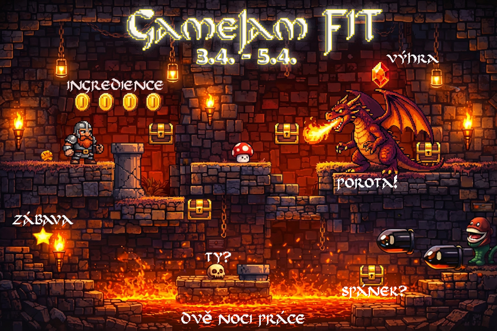
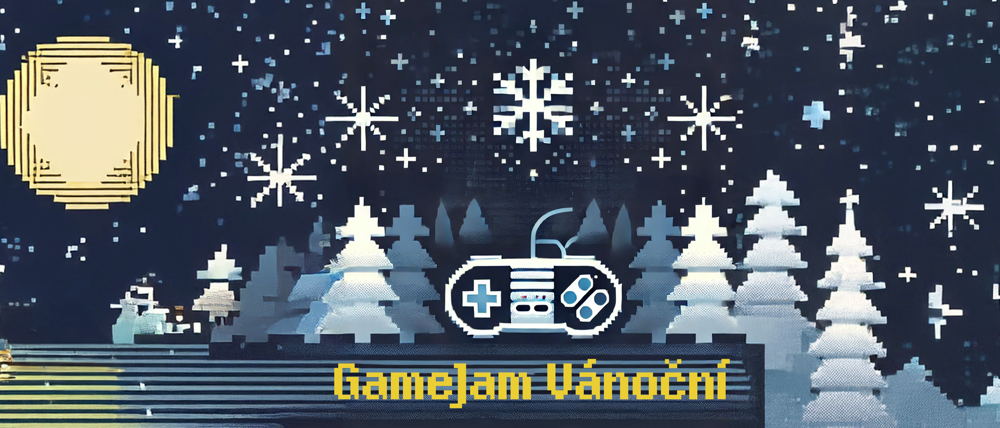
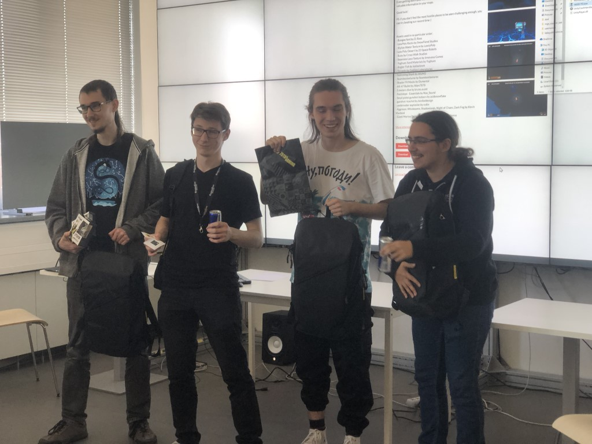

GRAFIT · FIT ČVUT
GRAFIT · FIT ČVUTGameJam FIT 2026
Aktuální ročník a galerie týmů. Kompletní výsledky a hry jsou dostupné na GameJam webu.
Otevřít výsledky 2026 →Během několika intenzivních dnů vznikají digitální, deskové i experimentální hry. Vyberte si ročník a prohlédněte si výsledky, galerie a odkazy na hry.

Výsledky jednotlivých ročníků zůstávají na původních stránkách nebo na itch.io; tento rozcestník sjednocuje vstup pro české i zahraniční návštěvníky.
Aktuální ročník a galerie týmů. Kompletní výsledky a hry jsou dostupné na GameJam webu.
Otevřít výsledky 2026 →
ArchivVelikonoční jam 18.–20. dubna 2025 s výsledky, hrami, porotci a fotogalerií.
Otevřít ročník 2025 →Ročník s výsledky a dalšími hrami dostupnými přes společný GameJam web a itch.io.
Otevřít hry 2024 →
Archiv48hodinový jam FIT, SAGElabu a ggLabu s galerií, výsledky a vítěznými hrami.
Otevřít archiv 2022 →